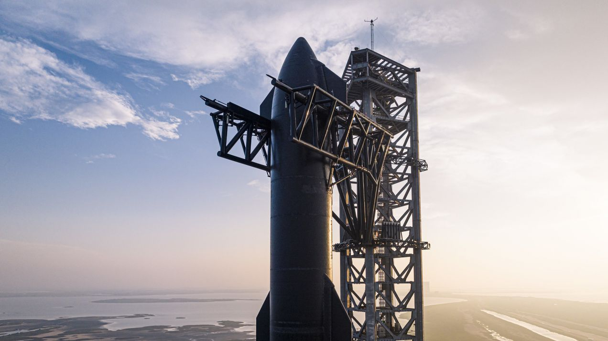
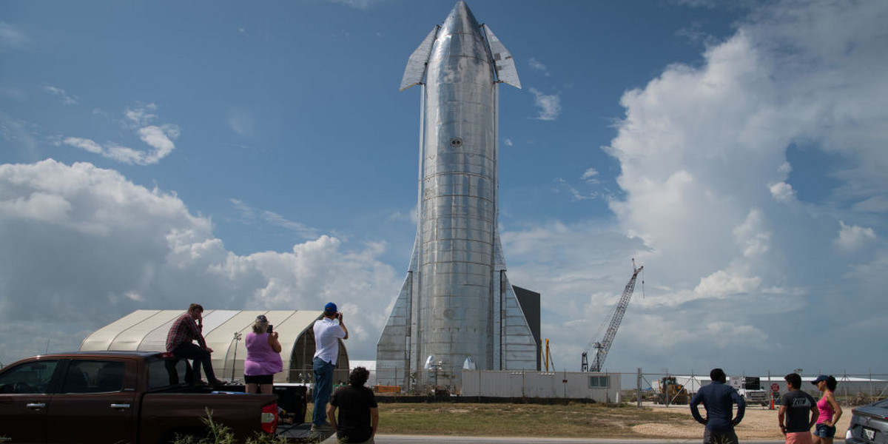
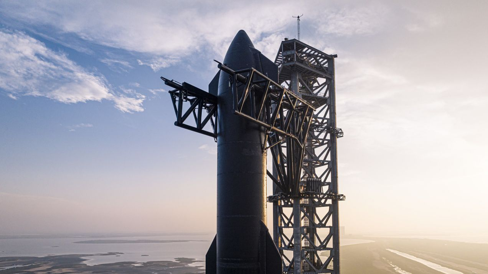
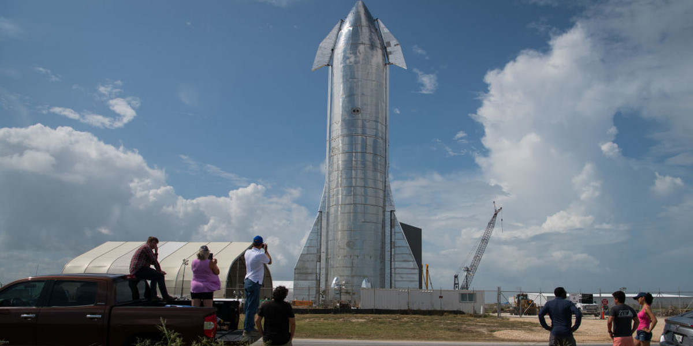

STARSHIP, la dernière innovation de SpaceX, est une fusée polyvalente complète avec Super Heavy comme son puissant premier étage et un vaisseau spatial avancé. Conçue pour la réutilisation, la fusée a la capacité de transporter des charges utiles pesant jusqu'à 100 tonnes en orbite basse (LEO), en faisant un moyen de transport potentiellement crucial pour les futures missions d'exploration. Elle intègre les dernières technologies, telles que les moteurs Raptor et des matériaux composites innovants, pour atteindre des objectifs avancés dans le domaine de l'exploration spatiale.


/2023/01/17/image/jpeg/hstIa6uTAe6W2pHqjLULfHHJLaS7Gfpjygja859Q.jpg)